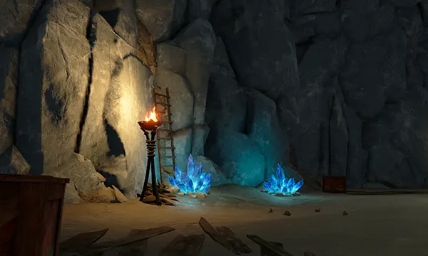

Isla ignota
Abrir en la wiki →Mazmorra. Una isla poco conocida, sin nombre, de la que a veces hablan los navegantes
- Tipo
- mazmorra
- Conecta con
- Caladero de Pandora

Mazmorra. Una isla poco conocida, sin nombre, de la que a veces hablan los navegantes